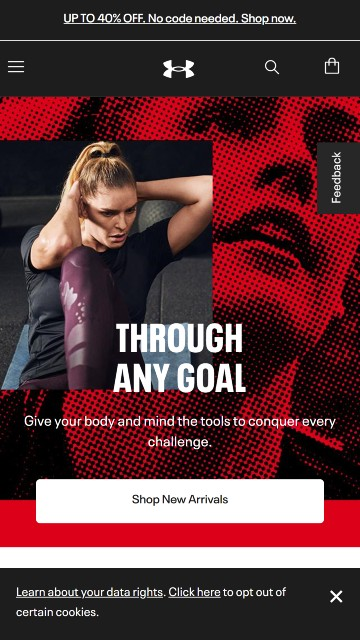

Contrast
Under Armour
underarmour.com

Contrast is when two or more very different (opposite) elements are placed together on the page. It
can aid to legibly improve, visual interest,
organization and hierarchy, and in highlighting main messages.
Contrast is achieved using colors, sizes, shapes, textures, saturation, and position or
alignment.
This Underarmour Sports Wear advertisement is a good example of contrast with the use
of opposite colors and textures. The home page features red, black and white colors on the image and
fonts that contrast each other
making them "pop" on the page attracting the viewer's attention.